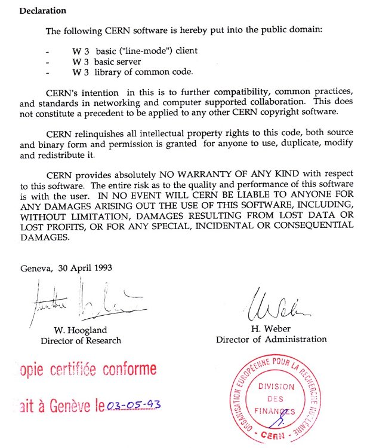
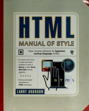
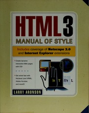
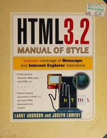
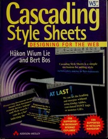

|  | CERN liberó el código fuente de la World Wide Web, permitiendo su uso por cualquier persona. |
|  | Larry Aronson. Ziff-Davis Press, Emeryville, California |
|  | Larry Aronson. Ziff-Davis Press, Emeryville, California |
| Arman Danesh | Sams.net. Indianapolis, Indiana (noviembre 1996) |
|  | Larry Aronson y Joseph Lowery. Ziff-Davis Press. Emeryville, California |
|  | Hakon Wium Lie, Bert Bos | Addison Wesley Longman. Harlow, England |